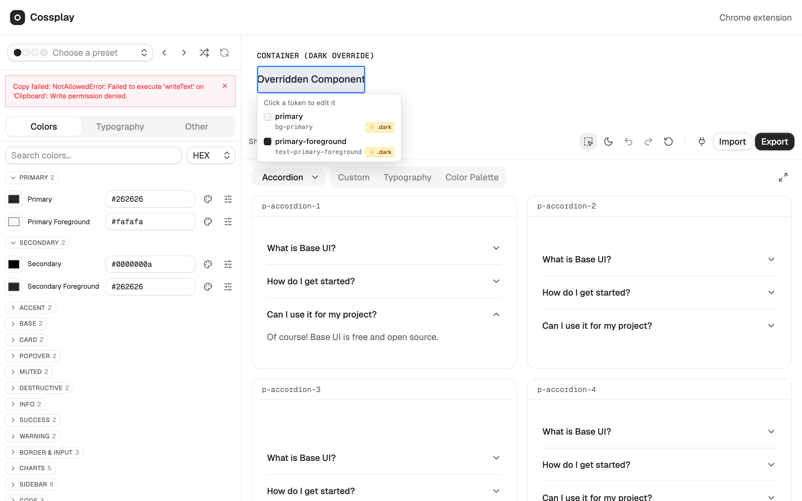
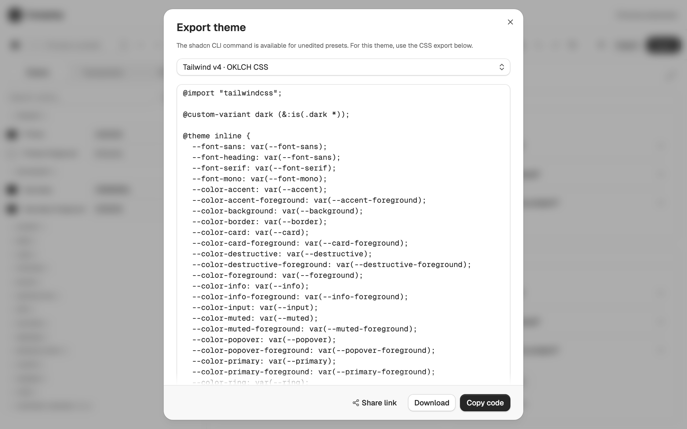
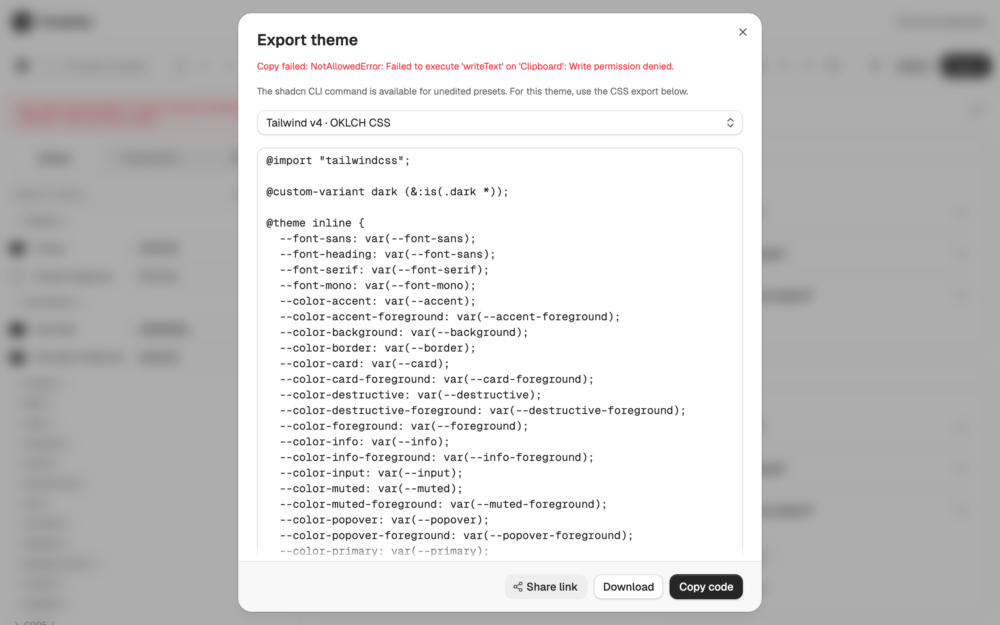
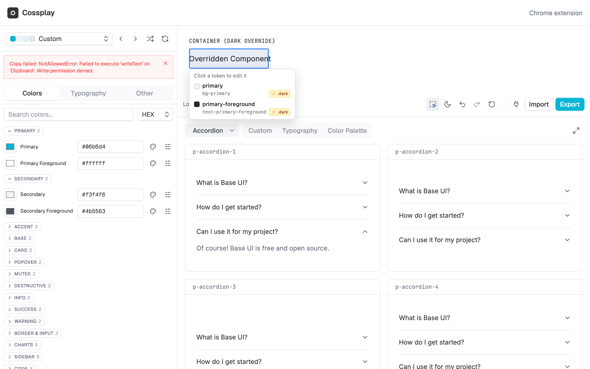

Trace token overrides live.
Instant ⚡ .dark and inline ancestor badges in inspector
cossplay.vercel.app/editor

Share themes with one link.
Compact deflate-raw hash · Send to anyone
cossplay.vercel.app/editor


Zero install. Instant live.
Loads your customized palette in seconds
cossplay.vercel.app/editor#theme=z_...

cossplay.vercel.app/editor
100% In Browser · No Account Required ·
Open Source